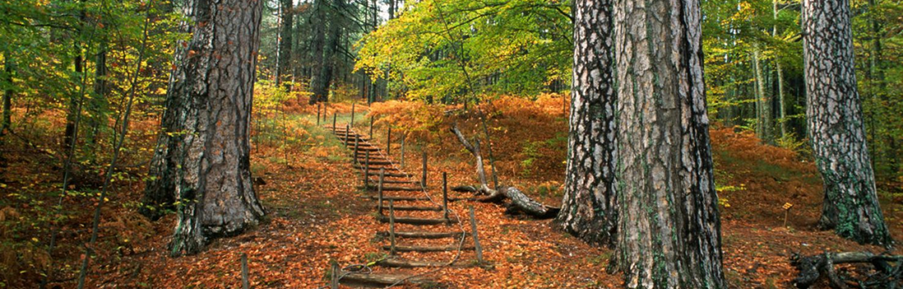
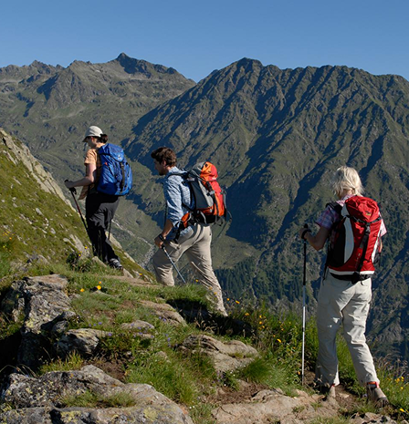

Esplora i parchi d’Italia
Biodiversità, paesaggi, tradizioni, natura, cultura.

In primo piano


Attività ed esperienze

I parchi naturali italiani sono un tesoro di ecosistemi ricchi, paesaggi
mozzafiato e unici legami tra uomo e ambiente.
Scopri flora, fauna e le storie che rendono speciale ogni angolo protetto del nostro Paese.
Scopri flora, fauna e le storie che rendono speciale ogni angolo protetto del nostro Paese.